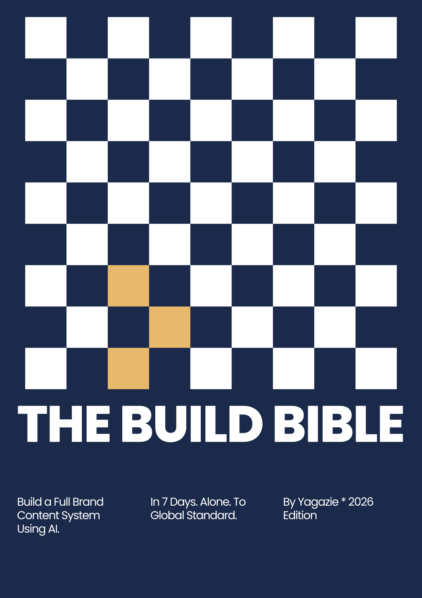

Dog in the City — exhibition artwork, not an installation photograph.
Beforethe post.
There’s a story worth finding.
I help brands find it, own it,
and give people a reason to care.

Good stories
start with
paying attention.
start with
paying attention.
RemSleep
ovalay
AIESEC
HAWKSWORTH
Tony & Co
A brand should have
something worth saying.
I look for the audience truth, the business need and the moment they meet. Then I turn that into a clear point of view, a campaign people recognise and a content system a team can actually use.
Thinking, in practice.
Different briefs.
The same curiosity.
The post is the
last visible part.
Before the words, the visuals and the calendar,
there’s a little more work to do.
Notice.
What’s happening in people’s lives? I start with research, observation and the details others might pass over.
Find the gap.
What do people want, and what gets in the way? That tension is often where a useful idea begins.
Shape the idea.
What can this brand credibly say or do? I turn the insight into positioning and creative direction.
Build the route.
How does the thinking become action? A campaign, an editorial plan or a system the team can keep using.

Victoria on paper.
Yagazie, too.
I’m a brand and content strategist, and the owner of Projenius, where I also work in event management. I’m interested in what makes people recognise themselves in a brand, online and in person.
My work moves between research and creative direction: helping a paused brand return to market, giving a new business room to grow, or making a complicated message feel clear. I care about what happens after the strategy document, too.
That’s why my work often includes the editorial guidance, client conversations and content systems that help an idea hold together in the real world.
View my résuméEDUCATION
LL.B., University of Abuja
2026
AREAS OF FOCUS
Brand positioning · Audience research
Content strategy · Campaign direction
Event management through Projenius
Bringing people together.
I own Projenius, where I also manage events alongside my brand and content strategy work. From fashion and creative conversations to art and culture, these are some of the experiences in my company’s portfolio.

The Build Bible.
A practical guide I created to help marketers build a brand content system with AI.
Written for social media managers, marketing generalists and founders handling their own marketing, the guide connects brand strategy with the day-to-day work of producing content.
- Brand identity exercises and a reusable brand prompt template.
- Content planning, calendars and repurposing workflows.
- Guidance for producing visuals and short-form video.
- A prompt library and a seven-day implementation plan.
2026 edition · 52-page PDF
Ask about the bookCommunity & teaching.
Cowrywise
Campus Ambassador
Financial-literacy workshops, campus outreach and brand awareness.
Lawsan Media
University of Abuja
Helped establish the law faculty’s media department and develop its structure and governance.
Beginner Strategies for SMEs
Brand-strategy class
Hosted an introductory brand-strategy class on Google Meet.
Chit Chat
Positioning & hosting
Shaped the positioning and hosted online conversations.
Notes from the margins.
Recognition is an invitation.
A familiar detail can make someone feel, “this is ours.” Cultural relevance starts when that detail shapes the idea itself.
A budget doesn’t cancel aspiration.
People can be careful with money and still want to feel special. Good positioning makes room for both truths.
Make the promise something people use.
A brand’s encouragement means more when it becomes practical help. Useful ideas give people a way to take part.